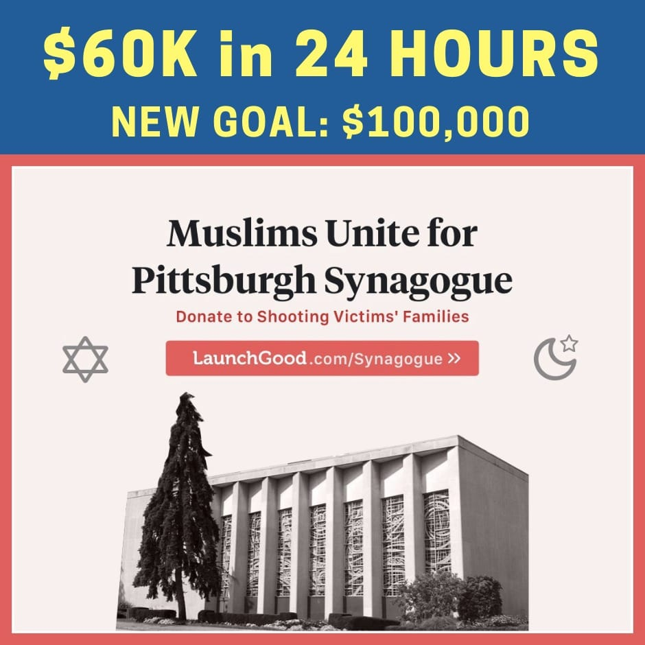

<!doctype html>
<html class="no-js" lang="he" dir="rtl"></html>
  <head>
    <title>חדשות טובות</title>
    <meta charset="utf-8">
    <meta property="viewport" content="width=device-width,initial-scale=1">
    <link rel="icon" href="icon.png">
  </head>
  <body>
      <h1>תוך יום: מוסלמים אספו מעל מאה אלף<br>
           דולר למען קורבנות הירי בפיטסבורג</h1>
           <h2>
               שעות ספורות לאחר הירי עלה לרשת קמפיין גיוס כספים יוצא דופן<br>
                למען קורבנות  הירי בפיטסבורג ביוזמת אירגונים מוסלמיים: "אנו מקווים<br>
                לשלוח מסר שאין מקום לשנאה ואלימות כאלו באמריקה". תוך שעות<br>
                 ספורות שילשו יוזמי הקמפיין את סכום היעד שלהם
            </h2>
            
            <hr>
            <p>הטבח הנורא שאירע ביום שבת בפיטסבורג זיעזע לא רק את הקהילה המקומית אלא את העולם כולו.
                במהלך היממה שלאחר הירי החלו להופיע יוזמות שונות במטרה לתמוך בקורבנות הירי,<br>
                אבל כבר שעות ספורות לאחר הירי עלה לרשת <a href="https://www.launchgood.com/project/muslims_unite_for_pittsburgh_synagogue#!/"> קמפיין לגיוס כספים</a>
                יוצא דופן למען הקהילה המקומית האבלה, תחת הכותרת "מוסלמים מתאחדים כדי לעזור לבית הכנסת בפיטסבורג".</p>

                <p>
                    מאחורי היוזמה עומדים שני ארגונים מוסלמיים – CelebrateMercy ו-MPower Change
                    ,שהחליטו לגייס את הקהילה המוסלמית בארה"ב כדי לסייע לקורבנות הירי
                    הפצועים ולמשפחות <br> 
                    שאיבדו את יקיריהן. "אנחנו רוצים להגיב לרעבעזרת טוב, כפי שהאמונה שלנו מורה לנו, ולשלוח מסר חזק של חמלה באמצעות עשייה", נכתב בעמוד הקמפיין.
                    תוך 6 שעות  בלבד מרגע עלייתו <br> 
                    הצליח הקמפיין לגייס  25 אלף דולר.תוך פחות מיממה הגיע הסכום ל-50 אלף דולר,
                    ונכון לעכשיו כבר נאספו יותר ממאה אלף דולר. הקמפיין עתיד להימשך 8 ימים נוספים, שבסופם יועברו הכספים <br> 
                    לבית הכנסת "עץ החיים" שבו התרחש הירי, על מנת שיחלק אותם לקורבנות הירי ומשפחותיהם האבלות,
                    במטרה לסייע  להם בצרכים המידיים בטווח הקצר, כמו הוצאות רפואיות,הוצאות קבורה <br> 
                    וכן הלאה."שום סכום כסף לא יחזיר את יקיריהם, אבל אנחנו מקווים להפחית את הנטל שלהם בדרך כלשהי", נכתב בעמוד.
                    </p>
                    <p>בעוד שהמעשים חסרי ההיגיון האלו מילאו אותנו בצער, אנו נזכרים במסר האחדות,
                         הסובלנות וההגנה ההדדית של חוקת מדינה: <br> 
                        <b>חוזה חברתי היסטורי בין יהודי מדינה לבין הקהילה המוסלמית הראשונה,</b>  כתבו יוזמי הקמפיין. <br> 
                        "אנחנו גם פועלים בהשראת דוגמתו של הנביא שלנו מוחמד, שנעמד כדי לכבד מסע לוויה יהודית חולף.<br>
                        כשנשאל מדוע נעמד בלוויה יהודית, השיב – האם אין זו נפש אנושית?".
                    </p>
                    <p>יוזמי הקמפיין הדגישו שעל אף שמדובר בקמפיין בהובלת מוסלמים, הם מזמינים את בני כל הדתות והאמונות לתרום.<br>
                         "באמצעות הקמפיין הזה, אנו מקווים לשלוח מהקהילות היהודיות והמוסלמיות מסר מאוחד שאין מקום לשנאה ואלימות כאלו באמריקה",<br>
                          כתבו, "אנו מתפללים לשקם את תחושת הביטחון והשלום בקהילה היהודית-אמריקאית, שללא ספק התערערה באירוע הזה".</p>
  </body>
</html>					        
	